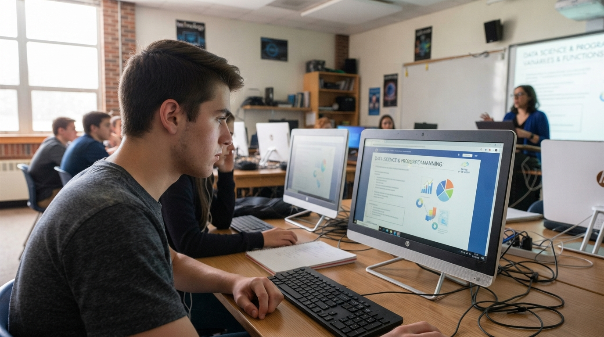
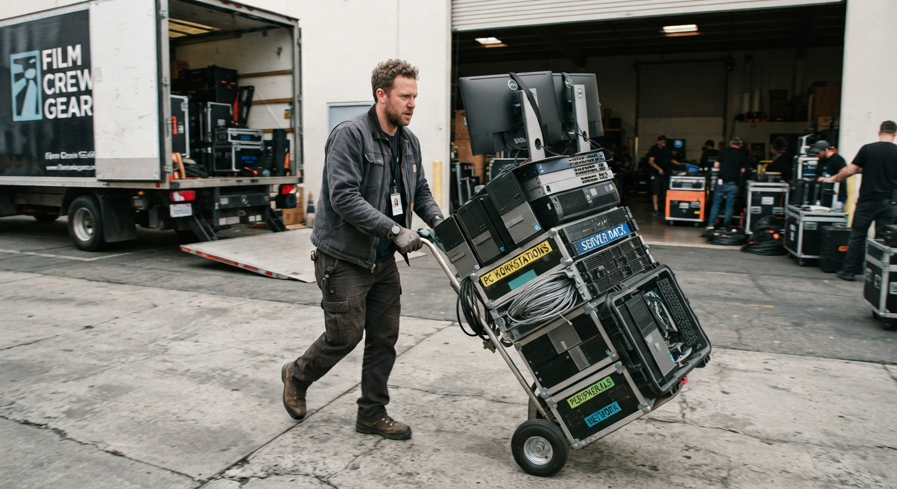
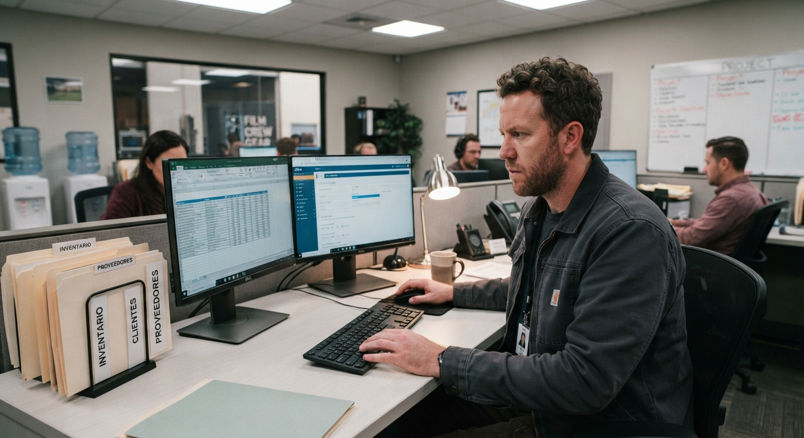

Acceso por rol
Roles y permisos de SIRAME
Los permisos se asignan por rol, no por persona: así, cualquiera que entre al sistema con una cuenta de Coordinador tiene exactamente el mismo acceso que cualquier otro Coordinador.

Consulta y reporte
Pensado para quien usa el equipo día a día en el aula o laboratorio, sin necesitar acceso administrativo. Puede ver en qué estado está el equipo asignado a su espacio y avisar apenas detecta una falla.
- Ver equipo: consulta ficha, estado y ubicación de los equipos de su(s) espacio(s) asignado(s).
- Reportar incidencia: abre un reporte con descripción y queda vinculado a su usuario para seguimiento.
Gestión operativa
El rol intermedio: administra el día a día del equipo bajo su responsabilidad (un laboratorio, una coordinación, un edificio) sin necesitar pasar por Administración para cada movimiento.
- Ver y actualizar equipo: edita estado, ubicación y datos de conservación.
- Registrar traslados: mueve equipo entre ubicaciones dejando motivo y fecha.
- Consultar incidencias: revisa los reportes hechos por profesores de su área.


Control total del sistema
Acceso completo: crea y elimina usuarios, autoriza bajas de equipo, revisa el historial completo de mantenimientos y configura los tipos de equipo y ubicaciones disponibles.
- Gestión de usuarios: crea, edita y desactiva cuentas, asignando el rol correspondiente.
- Mantenimientos y bajas: registra mantenimientos y autoriza la baja formal de un equipo.
- Configuración general: administra tipos de equipo y ubicaciones del catálogo.
¿Ya sabés qué rol necesitás?
Solicitá tu acceso con el rol correspondiente y Administración lo habilita.
Solicitar acceso